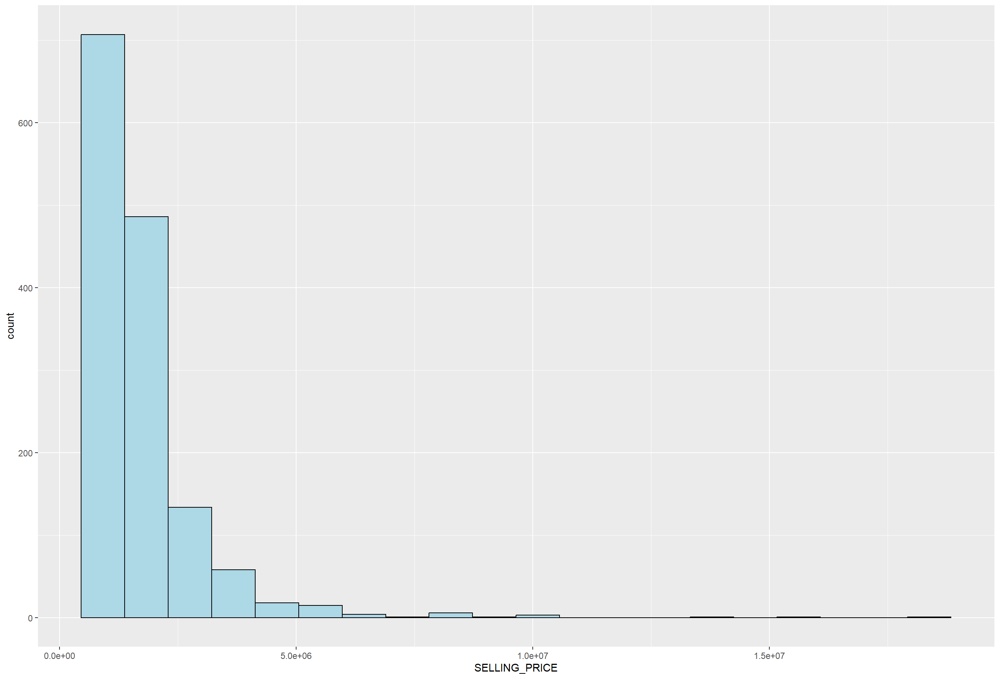
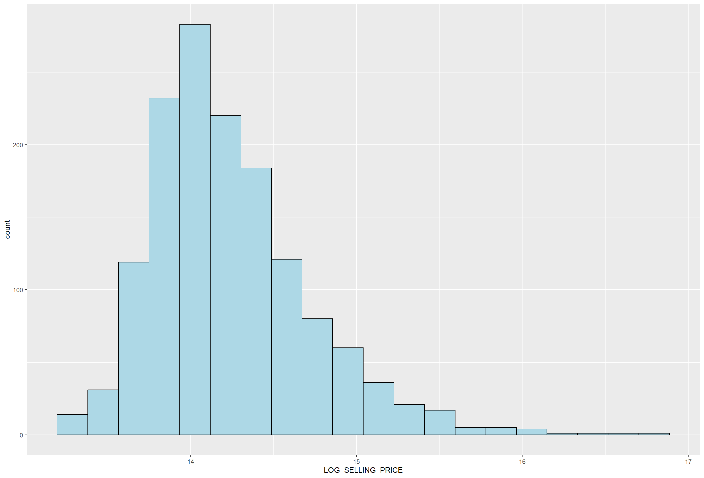
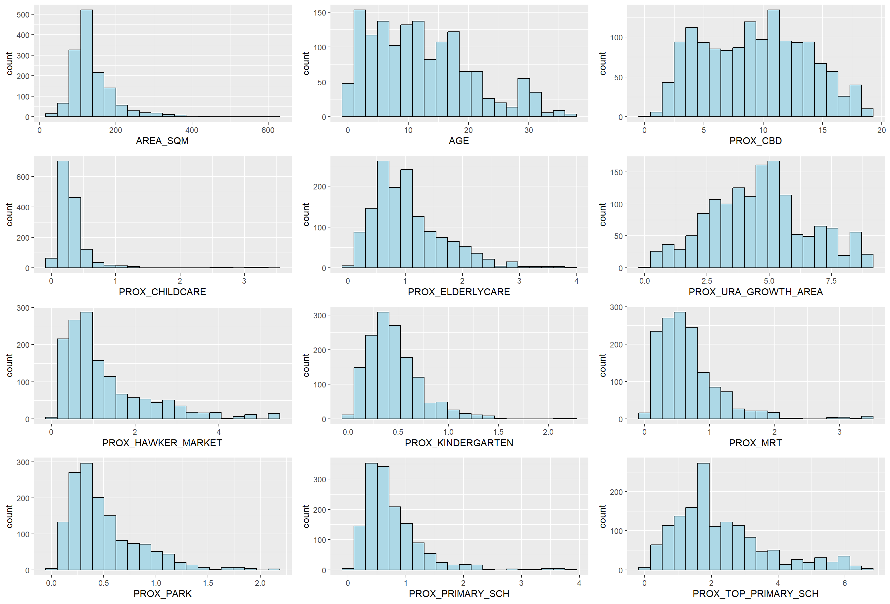
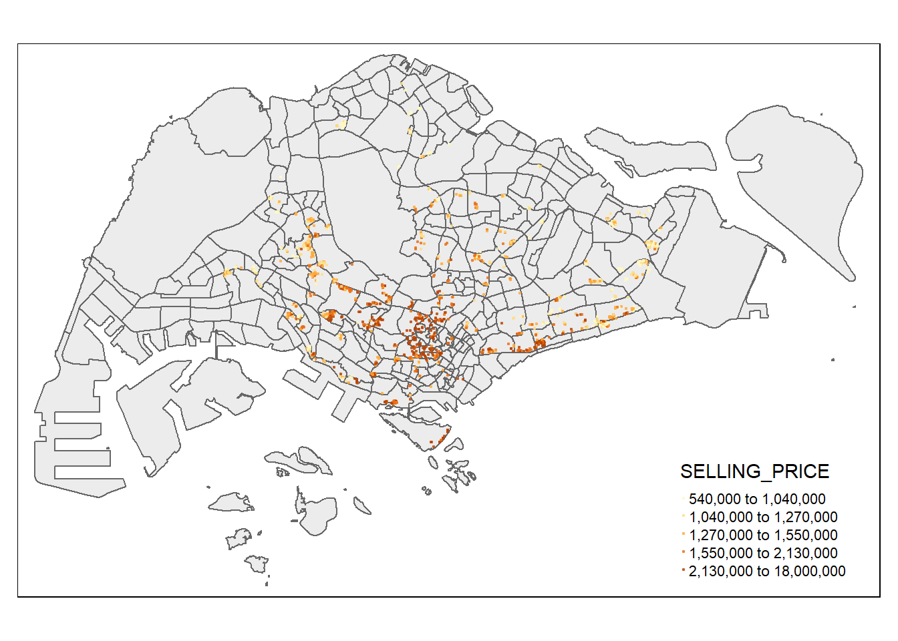

package 'olsrr' successfully unpacked and MD5 sums checked
The downloaded binary packages are in
C:\Users\NYX\AppData\Local\Temp\RtmpOCeJ2G\downloaded_packages
package 'DEoptimR' successfully unpacked and MD5 sums checked
package 'intervals' successfully unpacked and MD5 sums checked
package 'spdep' successfully unpacked and MD5 sums checked
package 'LearnBayes' successfully unpacked and MD5 sums checked
package 'robustbase' successfully unpacked and MD5 sums checked
package 'spacetime' successfully unpacked and MD5 sums checked
package 'spatialreg' successfully unpacked and MD5 sums checked
package 'FNN' successfully unpacked and MD5 sums checked
package 'GWmodel' successfully unpacked and MD5 sums checked
The downloaded binary packages are in
C:\Users\NYX\AppData\Local\Temp\RtmpOCeJ2G\downloaded_packages
package 'labelled' successfully unpacked and MD5 sums checked
package 'broom.helpers' successfully unpacked and MD5 sums checked
package 'gtsummary' successfully unpacked and MD5 sums checked
The downloaded binary packages are in
C:\Users\NYX\AppData\Local\Temp\RtmpOCeJ2G\downloaded_packagesHands-on Exercise 4.1: Geopraphically Weighted Regression
13.1 Overview
Geographically weighted regression (GWR) is a spatial statistical technique that takes non-stationary variables into consideration (e.g., climate; demographic factors; physical environment characteristics) and models the local relationships between these independent variables and an outcome of interest (also known as dependent variable).
In this hands-on exercise, we will learn how to build hedonic pricing models by using GWR methods.
Hedonic Pricing is a model that identifies price factors according to the premise that price is determined by internal and external factors affecting it. For housing, internal could mean size, height, appearance, solar panels while external could mean crime rate, distance to school or downtown area.
The dependent variable is the resale prices of condominium in 2015. The independent variables are divided into either structural and locational.
13.2 The Data
Two data sets will be used in this model building exercise, they are:
URA Master Plan subzone boundary in shapefile format (i.e. MP14_SUBZONE_WEB_PL)
Condo_resale_2015 in csv format (i.e. Condo_resale_2015.csv)
Using MP14 instead of MP19 because of condo_resale_2015.
13.3 Getting Started
Before we get started, it is important for us to install the necessary R packages into R and launch these R packages into R environment.
The R packages needed for this exercise are as follows:
R package for building OLS and performing diagnostics tests
R package for calibrating geographical weighted family of models
By calibration, we meant estimating local parameters that vary spatially for each location in the study area, considering nearby observations with higher weights and more distant observations with lower weights. This allows the relationship between variables to vary spatially, capturing local variations in the relationships.
The significance of the variables can be assessed locally, telling us where (at which location) specific predictors have a more significant impact on our dependent variable.
Model Evaluation:: The calibration process in GWR involves fitting the model to the data at each location, and the quality of the fit can be assessed through various diagnostics (e.g., residuals, local R-squared values).
When calibrating a Geographically Weighted Regression model, the emphasis is on capturing spatial heterogeneity in the relationships between variables and understanding how these relationships change across the study area. This is different from traditional models that assume a globally constant relationship. (Hands-on3 and In-class3)
R package for multivariate data visualisation and analysis
ggpubr for some easy-to-use functions for creating and customizing ‘ggplot2’- based publication ready plots.
Spatial data handling
- sf for importing, integrating, processing and transforming geospatial data.
Attribute data handling
- tidyverse, especially readr, ggplot2 and dplyr
Choropleth mapping
- tmap for creating thematic maps
The code chunks below installs and launches these R packages into R environment.
13.4 A short note about GWmodel
GWmodel package provides a collection of localised spatial statistical methods, namely: GW summary statistics, GW principal components analysis, GW discriminant analysis and various forms of GW regression; some of which are provided in basic and robust (outlier resistant) forms. Commonly, outputs or parameters of the GWmodel are mapped to provide a useful exploratory tool, which can often precede (and direct) a more traditional or sophisticated statistical analysis.
13.5 Geospatial Data Wrangling
13.5.1 Importing geospatial data
The geospatial data used in this hands-on exercise is called MP14_SUBZONE_WEB_PL. It is in ESRI shapefile format. The shapefile consists of URA Master Plan 2014's planning subzone boundaries. Polygon features are used to represent these geographic boundaries. The GIS data is in svy21 projected coordinates systems.
The code chunk below is used to import MP_SUBZONE_WEB_PL shapefile by using st_read() of sf packages.
Reading layer `MP14_SUBZONE_WEB_PL' from data source
`C:\yixin-neo\ISSS624_AGA\Hands-on_Ex4\data\geospatial' using driver `ESRI Shapefile'
Simple feature collection with 323 features and 15 fields
Geometry type: MULTIPOLYGON
Dimension: XY
Bounding box: xmin: 2667.538 ymin: 15748.72 xmax: 56396.44 ymax: 50256.33
Projected CRS: SVY21Coordinate Reference System:
User input: SVY21
wkt:
PROJCRS["SVY21",
BASEGEOGCRS["SVY21[WGS84]",
DATUM["World Geodetic System 1984",
ELLIPSOID["WGS 84",6378137,298.257223563,
LENGTHUNIT["metre",1]],
ID["EPSG",6326]],
PRIMEM["Greenwich",0,
ANGLEUNIT["Degree",0.0174532925199433]]],
CONVERSION["unnamed",
METHOD["Transverse Mercator",
ID["EPSG",9807]],
PARAMETER["Latitude of natural origin",1.36666666666667,
ANGLEUNIT["Degree",0.0174532925199433],
ID["EPSG",8801]],
PARAMETER["Longitude of natural origin",103.833333333333,
ANGLEUNIT["Degree",0.0174532925199433],
ID["EPSG",8802]],
PARAMETER["Scale factor at natural origin",1,
SCALEUNIT["unity",1],
ID["EPSG",8805]],
PARAMETER["False easting",28001.642,
LENGTHUNIT["metre",1],
ID["EPSG",8806]],
PARAMETER["False northing",38744.572,
LENGTHUNIT["metre",1],
ID["EPSG",8807]]],
CS[Cartesian,2],
AXIS["(E)",east,
ORDER[1],
LENGTHUNIT["metre",1,
ID["EPSG",9001]]],
AXIS["(N)",north,
ORDER[2],
LENGTHUNIT["metre",1,
ID["EPSG",9001]]]]The report above shows that the R object used to contain the imported MP14_SUBZONE_WEB_PL shapefile is called mpsz and it is a simple feature object. The geometry type is multipolygon. it is also important to note that mpsz simple feature object does not have EPSG information.
13.5.2 Updating CRS information
The code chunk below updates the newly imported mpsz with the correct ESPG code (i.e. 3414)
The EPSG: is indicated as 3414 now.
Next, we will reveal the extent (rectangular boundary) of mpsz_svy21 by using st_bbox() of sf package.
13.6 Aspatial Data Wrangling
13.6.1 Importing the aspatial data
The condo_resale_2015 is in csv file format. The codes chunk below uses read_csv() function of readr package to import condo_resale_2015 into R as a tibble data frame called condo_resale.
Let us examine if the data file has been imported correctly.
The codes chunks below uses glimpse() to display the data structure.
Rows: 1,436
Columns: 23
$ LATITUDE <dbl> 1.287145, 1.328698, 1.313727, 1.308563, 1.321437,…
$ LONGITUDE <dbl> 103.7802, 103.8123, 103.7971, 103.8247, 103.9505,…
$ POSTCODE <dbl> 118635, 288420, 267833, 258380, 467169, 466472, 3…
$ SELLING_PRICE <dbl> 3000000, 3880000, 3325000, 4250000, 1400000, 1320…
$ AREA_SQM <dbl> 309, 290, 248, 127, 145, 139, 218, 141, 165, 168,…
$ AGE <dbl> 30, 32, 33, 7, 28, 22, 24, 24, 27, 31, 17, 22, 6,…
$ PROX_CBD <dbl> 7.941259, 6.609797, 6.898000, 4.038861, 11.783402…
$ PROX_CHILDCARE <dbl> 0.16597932, 0.28027246, 0.42922669, 0.39473543, 0…
$ PROX_ELDERLYCARE <dbl> 2.5198118, 1.9333338, 0.5021395, 1.9910316, 1.121…
$ PROX_URA_GROWTH_AREA <dbl> 6.618741, 7.505109, 6.463887, 4.906512, 6.410632,…
$ PROX_HAWKER_MARKET <dbl> 1.76542207, 0.54507614, 0.37789301, 1.68259969, 0…
$ PROX_KINDERGARTEN <dbl> 0.05835552, 0.61592412, 0.14120309, 0.38200076, 0…
$ PROX_MRT <dbl> 0.5607188, 0.6584461, 0.3053433, 0.6910183, 0.528…
$ PROX_PARK <dbl> 1.1710446, 0.1992269, 0.2779886, 0.9832843, 0.116…
$ PROX_PRIMARY_SCH <dbl> 1.6340256, 0.9747834, 1.4715016, 1.4546324, 0.709…
$ PROX_TOP_PRIMARY_SCH <dbl> 3.3273195, 0.9747834, 1.4715016, 2.3006394, 0.709…
$ PROX_SHOPPING_MALL <dbl> 2.2102717, 2.9374279, 1.2256850, 0.3525671, 1.307…
$ PROX_SUPERMARKET <dbl> 0.9103958, 0.5900617, 0.4135583, 0.4162219, 0.581…
$ PROX_BUS_STOP <dbl> 0.10336166, 0.28673408, 0.28504777, 0.29872340, 0…
$ NO_Of_UNITS <dbl> 18, 20, 27, 30, 30, 31, 32, 32, 32, 32, 34, 34, 3…
$ FAMILY_FRIENDLY <dbl> 0, 0, 0, 0, 0, 1, 1, 0, 1, 1, 0, 0, 0, 0, 0, 0, 0…
$ FREEHOLD <dbl> 1, 1, 1, 1, 1, 1, 1, 1, 1, 0, 1, 1, 1, 1, 1, 1, 1…
$ LEASEHOLD_99YR <dbl> 0, 0, 0, 0, 0, 0, 0, 0, 0, 0, 0, 0, 0, 0, 0, 0, 0…Check the first five longitude (X) and latitude (Y) columns.
# A tibble: 6 × 2
LATITUDE LONGITUDE
<dbl> <dbl>
1 1.29 104.
2 1.33 104.
3 1.31 104.
4 1.31 104.
5 1.32 104.
6 1.31 104.Next, summary() of base R is used to display the summary statistics of cond_resale tibble data frame.
Longitude and latitude are in decimal deg (< 360deg) , WSG84 (or crs 4326).
Some postal codes are only 5 digits, the number 0 in front could have been truncated.
LATITUDE LONGITUDE POSTCODE SELLING_PRICE
Min. :1.240 Min. :103.7 Min. : 18965 Min. : 540000
1st Qu.:1.309 1st Qu.:103.8 1st Qu.:259849 1st Qu.: 1100000
Median :1.328 Median :103.8 Median :469298 Median : 1383222
Mean :1.334 Mean :103.8 Mean :440439 Mean : 1751211
3rd Qu.:1.357 3rd Qu.:103.9 3rd Qu.:589486 3rd Qu.: 1950000
Max. :1.454 Max. :104.0 Max. :828833 Max. :18000000
AREA_SQM AGE PROX_CBD PROX_CHILDCARE
Min. : 34.0 Min. : 0.00 Min. : 0.3869 Min. :0.004927
1st Qu.:103.0 1st Qu.: 5.00 1st Qu.: 5.5574 1st Qu.:0.174481
Median :121.0 Median :11.00 Median : 9.3567 Median :0.258135
Mean :136.5 Mean :12.14 Mean : 9.3254 Mean :0.326313
3rd Qu.:156.0 3rd Qu.:18.00 3rd Qu.:12.6661 3rd Qu.:0.368293
Max. :619.0 Max. :37.00 Max. :19.1804 Max. :3.465726
PROX_ELDERLYCARE PROX_URA_GROWTH_AREA PROX_HAWKER_MARKET PROX_KINDERGARTEN
Min. :0.05451 Min. :0.2145 Min. :0.05182 Min. :0.004927
1st Qu.:0.61254 1st Qu.:3.1643 1st Qu.:0.55245 1st Qu.:0.276345
Median :0.94179 Median :4.6186 Median :0.90842 Median :0.413385
Mean :1.05351 Mean :4.5981 Mean :1.27987 Mean :0.458903
3rd Qu.:1.35122 3rd Qu.:5.7550 3rd Qu.:1.68578 3rd Qu.:0.578474
Max. :3.94916 Max. :9.1554 Max. :5.37435 Max. :2.229045
PROX_MRT PROX_PARK PROX_PRIMARY_SCH PROX_TOP_PRIMARY_SCH
Min. :0.05278 Min. :0.02906 Min. :0.07711 Min. :0.07711
1st Qu.:0.34646 1st Qu.:0.26211 1st Qu.:0.44024 1st Qu.:1.34451
Median :0.57430 Median :0.39926 Median :0.63505 Median :1.88213
Mean :0.67316 Mean :0.49802 Mean :0.75471 Mean :2.27347
3rd Qu.:0.84844 3rd Qu.:0.65592 3rd Qu.:0.95104 3rd Qu.:2.90954
Max. :3.48037 Max. :2.16105 Max. :3.92899 Max. :6.74819
PROX_SHOPPING_MALL PROX_SUPERMARKET PROX_BUS_STOP NO_Of_UNITS
Min. :0.0000 Min. :0.0000 Min. :0.001595 Min. : 18.0
1st Qu.:0.5258 1st Qu.:0.3695 1st Qu.:0.098356 1st Qu.: 188.8
Median :0.9357 Median :0.5687 Median :0.151710 Median : 360.0
Mean :1.0455 Mean :0.6141 Mean :0.193974 Mean : 409.2
3rd Qu.:1.3994 3rd Qu.:0.7862 3rd Qu.:0.220466 3rd Qu.: 590.0
Max. :3.4774 Max. :2.2441 Max. :2.476639 Max. :1703.0
FAMILY_FRIENDLY FREEHOLD LEASEHOLD_99YR
Min. :0.0000 Min. :0.0000 Min. :0.0000
1st Qu.:0.0000 1st Qu.:0.0000 1st Qu.:0.0000
Median :0.0000 Median :0.0000 Median :0.0000
Mean :0.4868 Mean :0.4227 Mean :0.4882
3rd Qu.:1.0000 3rd Qu.:1.0000 3rd Qu.:1.0000
Max. :1.0000 Max. :1.0000 Max. :1.0000 13.6.2 Converting aspatial data frame into a sf object
Currently, the condo_resale tibble data frame is aspatial. We will convert it to a sf object. The code chunk below converts condo_resale data frame into a simple feature POINT data frame by using st_as_sf() of sf packages.
Notice that st_transform() of sf package is used to convert the coordinates from wgs84 (i.e. crs:4326) to svy21 (i.e. crs=3414).
Next, head() is used to list the content of condo_resale.sf object.
Simple feature collection with 6 features and 21 fields
Geometry type: POINT
Dimension: XY
Bounding box: xmin: 22085.12 ymin: 29951.54 xmax: 41042.56 ymax: 34546.2
Projected CRS: SVY21 / Singapore TM
# A tibble: 6 × 22
POSTCODE SELLING_PRICE AREA_SQM AGE PROX_CBD PROX_CHILDCARE PROX_ELDERLYCARE
<dbl> <dbl> <dbl> <dbl> <dbl> <dbl> <dbl>
1 118635 3000000 309 30 7.94 0.166 2.52
2 288420 3880000 290 32 6.61 0.280 1.93
3 267833 3325000 248 33 6.90 0.429 0.502
4 258380 4250000 127 7 4.04 0.395 1.99
5 467169 1400000 145 28 11.8 0.119 1.12
6 466472 1320000 139 22 10.3 0.125 0.789
# ℹ 15 more variables: PROX_URA_GROWTH_AREA <dbl>, PROX_HAWKER_MARKET <dbl>,
# PROX_KINDERGARTEN <dbl>, PROX_MRT <dbl>, PROX_PARK <dbl>,
# PROX_PRIMARY_SCH <dbl>, PROX_TOP_PRIMARY_SCH <dbl>,
# PROX_SHOPPING_MALL <dbl>, PROX_SUPERMARKET <dbl>, PROX_BUS_STOP <dbl>,
# NO_Of_UNITS <dbl>, FAMILY_FRIENDLY <dbl>, FREEHOLD <dbl>,
# LEASEHOLD_99YR <dbl>, geometry <POINT [m]>Notice that the output is in point feature data frame.
13.7 Exploratory Data Analysis (EDA)
In the section, wewill learn how to use statistical graphics functions of ggplot2 package to perform EDA.
13.7.1 EDA using statistical graphics
We can plot the distribution of SELLING_PRICE by using appropriate Exploratory Data Analysis (EDA) as shown in the code chunk below.
ggplot(data=condo_resale.sf, aes(x=`SELLING_PRICE`)) +
geom_histogram(bins=20, color="black", fill="light blue")
The figure above reveals a right skewed distribution. This means that more condominium units were transacted at relative lower prices.
Statistically, the skewed distribution can be normalised by using log transformation. The code chunk below is used to derive a new variable called LOG_SELLING_PRICE by using a log transformation on the variable SELLING_PRICE. It is performed using mutate() of dplyr package.
Now, we can plot the LOG_SELLING_PRICE using the code chunk below.
ggplot(data=condo_resale.sf, aes(x=`LOG_SELLING_PRICE`)) +
geom_histogram(bins=20, color="black", fill="light blue") 
Check for normality of the LOG_SELLING_PRICE. Although it is still not normally-distributed, it is less skewed after the transformation.
13.7.2 Multiple Histogram Plots distribution of variables
In this section, we will learn how to draw a small multiple histograms (also known as trellis plot) by using ggarrange() of ggpubr package.
The code chunk below is used to create 12 histograms. Then, ggarrange() is used to organised these histogram into a 3 columns by 4 rows small multiple plot.
AREA_SQM <- ggplot(data=condo_resale.sf, aes(x= `AREA_SQM`)) +
geom_histogram(bins=20, color="black", fill="light blue")
AGE <- ggplot(data=condo_resale.sf, aes(x= `AGE`)) +
geom_histogram(bins=20, color="black", fill="light blue")
PROX_CBD <- ggplot(data=condo_resale.sf, aes(x= `PROX_CBD`)) +
geom_histogram(bins=20, color="black", fill="light blue")
PROX_CHILDCARE <- ggplot(data=condo_resale.sf, aes(x= `PROX_CHILDCARE`)) +
geom_histogram(bins=20, color="black", fill="light blue")
PROX_ELDERLYCARE <- ggplot(data=condo_resale.sf, aes(x= `PROX_ELDERLYCARE`)) +
geom_histogram(bins=20, color="black", fill="light blue")
PROX_URA_GROWTH_AREA <- ggplot(data=condo_resale.sf,
aes(x= `PROX_URA_GROWTH_AREA`)) +
geom_histogram(bins=20, color="black", fill="light blue")
PROX_HAWKER_MARKET <- ggplot(data=condo_resale.sf, aes(x= `PROX_HAWKER_MARKET`)) +
geom_histogram(bins=20, color="black", fill="light blue")
PROX_KINDERGARTEN <- ggplot(data=condo_resale.sf, aes(x= `PROX_KINDERGARTEN`)) +
geom_histogram(bins=20, color="black", fill="light blue")
PROX_MRT <- ggplot(data=condo_resale.sf, aes(x= `PROX_MRT`)) +
geom_histogram(bins=20, color="black", fill="light blue")
PROX_PARK <- ggplot(data=condo_resale.sf, aes(x= `PROX_PARK`)) +
geom_histogram(bins=20, color="black", fill="light blue")
PROX_PRIMARY_SCH <- ggplot(data=condo_resale.sf, aes(x= `PROX_PRIMARY_SCH`)) +
geom_histogram(bins=20, color="black", fill="light blue")
PROX_TOP_PRIMARY_SCH <- ggplot(data=condo_resale.sf,
aes(x= `PROX_TOP_PRIMARY_SCH`)) +
geom_histogram(bins=20, color="black", fill="light blue")
ggarrange(AREA_SQM, AGE, PROX_CBD, PROX_CHILDCARE, PROX_ELDERLYCARE,
PROX_URA_GROWTH_AREA, PROX_HAWKER_MARKET, PROX_KINDERGARTEN, PROX_MRT,
PROX_PARK, PROX_PRIMARY_SCH, PROX_TOP_PRIMARY_SCH,
ncol = 3, nrow = 4)
13.7.3 Drawing Statistical Point Map
Lastly, we want to reveal the geospatial distribution condominium resale prices in Singapore. The map will be prepared by using tmap package.
tmap_mode('plot')
#tmap_mode('view')
#tmap_options(check.and.fix = TRUE)
tm_shape(mpsz_svy21)+
tm_polygons(alpha=0.5) +
tm_shape(condo_resale.sf) +
tm_dots(col = "SELLING_PRICE",
alpha = 0.6,
style="quantile") +
tm_view(set.zoom.limits = c(11,14))
Notice that tm_dots() is used instead of tm_bubbles().
If in tmap_mode(‘view’) mode,
set.zoom.limits argument of tm_view() sets the minimum and maximum zoom level to 11 and 14 respectively.